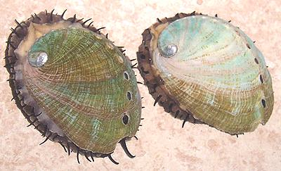
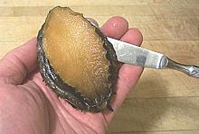
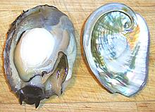
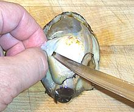
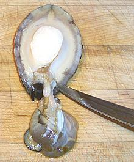
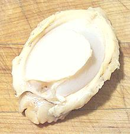
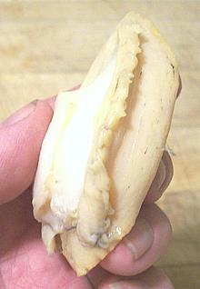

Abalone

[Abulon - various species of genus Haliotis]
There are eight species of abalone off the coast of California, Red, White,
Black, Pink, Green, Pinto, Flat and Threaded. Red abalone can get up to a
foot long but not many get much beyond the 7 inch minimum even though
harvesting them is highly restricted (free diving only, no SCUBA or air
tubes, strict limits and closed areas).
All wild abalone populations on the California coast are endangered or
severely threatened due to poor fishery management, largely the result of
inadequate data. The only exception is red abalone where severe
restrictions have been somewhat effective. Some stocks are considered
beyond natural recovery and must be restored by captive breeding and
concentration by transplanting, particularly white abalone which is near
extinction. Stocks in Australia, New Zealand and South Africa are
similarly threatened.
The high price abalone fetches and the short supply has made aquaculture
viable. Three species are farmed in California: Red (H. rufescens)
in northern regions, Pink (H. corrugata) and Green (photo H.
fulgens) in southern regions and Baja California. Abalone are fed
California giant kelp, the harvest of which is also strictly regulated.
More on Snails.
|

Scraping from shell

Shell removed

Trimming viscera

Cutting away head
|
|
The Internet has plenty of instructions on how to prepare abalone, but
oriented to divers who catch 7" and larger wild ones. Follow those
instructions with the 3-1/2 farmed ones we non-divers are likely to get
and you'll end up with just about nothing. For one thing
divers'
instructions are oriented to making abalone steaks. A 3-1/2 incher
just isn't going to make steaks.
- Hold the abalone in your hand face toward you (holes on the left). Go
in from the shallow side (opposite the holes) with a dull butter knife and
scrape along the shell to find the muscle. Scrape it free from the shell.
It'll be just a little to the front of center.
- Take your butter knife and scrape all the way around the edge of the
shell to free the mantle attachment. The abalone should now come completely
free of the shell.
- Next remove the viscera from the foot. Except at the head end it's
attached only to the very edge of the foot muscle where it was attached to
the shell
- Now cut down a bit deeper to remove the head from the muscle. You'll
have to scoop a little out of a cavity in the muscle to get it all.
- The next step is to scrub your abalone thoroughly with a stiff bristle
brush under running water. This will remove all the dark coloration leaving
you a clean foot muscle.
- Note in the side view the double fringe where the mantle was attached
to the edge of the shell. Instructions for large abalone tell you to cut
this away but admit it's perfectly edible. For the uses you'll probably put
your small abalone to it is not necessary to remove this fringe.
- It will probably not be necessary to pound the muscle to tenderize it
as with large abalone, but if you think it's necessary for your particular
use, slice it into 1/4" thick pieces and pound them with the flat side of
your kitchen mallet, but not so much the flesh starts to tear apart.


|
sf_gpabaz 061017 - www.clovegarden.com
©Andrew Grygus - agryg@clovegarden.com - Photos
on this page not otherwise credited © cg1
- Linking to and non-commercial use of this page permitted